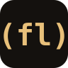

Lisp
괄호가 문법입니다. 코드와 데이터가 같은 모양이라 생성·검사·변환이 한 경로입니다.
(defn greet [name] (str "Hello, " name "!"))

FreeLangLISP · FOR MODELS · V11
Code is data. The surface is small enough for a model to hold, and real enough to compile itself. FreeLang is a Lisp-like language for people and agents that write programs together.
(println "Hello from FL!") (println (+ 1 2 3))
Gleam, Elixir, Zig, Clojure, Fennel은 모두 같은 뼈대를 씁니다. 한 문장으로 정체를 말하고, 바로 코드를 보여주고, 주장마다 예시를 붙입니다. FreeLang도 그 뼈대로 소개합니다.
괄호가 문법입니다. 코드와 데이터가 같은 모양이라 생성·검사·변환이 한 경로입니다.
(defn greet [name] (str "Hello, " name "!"))
키워드가 적고, 파일이 짧고, 매크로 없이 읽을 수 있습니다. 에이전트가 한 화면에 담습니다.
(defn factorial [n]
(if (<= n 1) 1
(* n (factorial (- n 1)))))
함수, 컬렉션, HTTP, DB. 홍보용 장난감이 아니라 컴파일러가 있는 언어입니다.
(define nums [1 2 3 4])
(define person {"lang" "FreeLang"})
이 저장소는 앞문입니다. README, 라이선스, 예시. 컴파일러·런타임·시험은 개발 저장소에 있습니다.